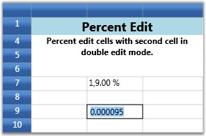

The PercentEdit cell type restricts the data entry to percentage values only. The following are the style properties used with this cell type.
Table 11: GridStyleInfo Property
|
GridStyleInfo Property |
Description |
|
Cell Type |
Set to “PercentEdit”. |
|
PercentEditMode |
Indicates the way of editing the text in percent edit cells. Possible values – PercentMode and DoubleMode |
|
PercentSymbol |
String to use as the percent symbol. |
|
PercentGroupSizes |
Number of digits in each group to the left of the decimal. |
|
PercentGroupSeparator |
String that separates group of digits to the left of the decimal. |
|
PercentDecimalDigits |
Number of digits that appear after the decimal. |
Example
Setting up two Percent Edit cells with different group sizes and decimal digits.
The first cell operates in Percent mode of editing while the second cell follows Double mode.
Double mode displays the values in System.Double format and Percent mode adds a percent sign next to the numbers.
|
[C#]
var percentStyleInfo = this.grid.Model[7, 2]; percentStyleInfo.CellType = "PercentEdit";
percentStyleInfo.NumberFormat = new NumberFormatInfo() { PercentSymbol = "%", PercentGroupSizes = new int[] { 1, 2, 3 }, PercentDecimalDigits = 2, PercentGroupSeparator = ",",
}; percentStyleInfo.PercentEditMode = PercentEditMode.PercentMode; percentStyleInfo.CellValue = 19;
var percentStyleInfo2 = this.grid.Model[9, 2]; percentStyleInfo2.CellType = "PercentEdit"; percentStyleInfo2.NumberFormat = new NumberFormatInfo() { PercentSymbol = "%", PercentGroupSizes = new int[] { 3 }, PercentDecimalDigits = 4, PercentGroupSeparator = ",",
}; percentStyleInfo2.PercentEditMode = PercentEditMode.DoubleMode; percentStyleInfo2.CellValue = 91; |
Output
The following output is generated using the code above.

Figure 32: Percent Edit Cell
 Note: For complete code, please refer to the
following browser sample.
Note: For complete code, please refer to the
following browser sample.
...\My Documents\Syncfusion\EssentialStudio\<Version Number>\WPF\Grid.WPF\Samples\3.5\WindowsSamples\Cell Types\Percent Edit Cell Demo